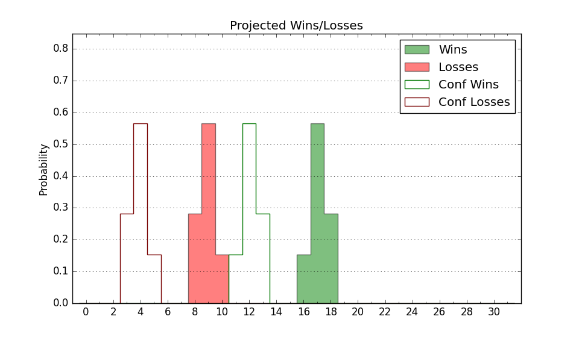

| Home | Game Probabilities | Conferences | Preseason Predictions | Odds Charts | NCAA Tournament |
| City: | Asheville, North Carolina | |
| Conference: | Big South (2nd)
| |
| Record: | 11-3 (Conf) 16-8 (Overall) | |
| Ratings: | Comp.: -2.7 (193rd) Net: -2.6 (193rd) Off: 110.0 (103rd) Def: 112.6 (295th) SoR: 0.0 (117th) |
| Remaining | ||||||
|---|---|---|---|---|---|---|
| Date | Opponent | Win Prob | Pred. | |||
| 2/26 | Presbyterian (253) | 76.0% | W 78-70 | |||
| 3/1 | @ Winthrop (199) | 36.6% | L 81-85 | |||
| Previous | Game Score | |||||
| Date | Opponent | Win Prob | Result | Off | Def | Net |
| 11/4 | @Alabama (6) | 1.5% | L 54-110 | -22.8 | -14.3 | -37.1 |
| 11/9 | @Ohio (173) | 31.3% | L 76-82 | -8.3 | 2.2 | -6.1 |
| 11/18 | @North Florida (248) | 46.8% | W 89-75 | 14.7 | 10.6 | 25.3 |
| 11/22 | (N) Southeast Missouri St. (201) | 51.9% | W 72-64 | -3.5 | 16.5 | 13.1 |
| 11/24 | @Central Arkansas (340) | 72.9% | L 83-92 | -13.7 | -7.9 | -21.6 |
| 12/1 | @Tennessee St. (260) | 50.6% | W 92-74 | 15.3 | 7.7 | 23.0 |
| 12/3 | @George Mason (77) | 11.4% | L 52-74 | -14.2 | -0.1 | -14.3 |
| 12/14 | Western Carolina (337) | 89.4% | W 78-61 | -9.5 | 8.2 | -1.3 |
| 12/17 | North Florida (248) | 75.0% | W 95-81 | 7.1 | 0.8 | 8.0 |
| 12/21 | @UNC Wilmington (126) | 22.7% | L 74-85 | 7.5 | -15.9 | -8.4 |
| 1/4 | High Point (91) | 36.3% | W 103-99 | 20.1 | -9.3 | 10.8 |
| 1/8 | @Longwood (200) | 36.6% | L 76-85 | 0.5 | -6.1 | -5.5 |
| 1/11 | @Presbyterian (253) | 48.1% | W 96-87 | 31.0 | -14.3 | 16.6 |
| 1/15 | USC Upstate (341) | 90.3% | W 93-92 | -4.5 | -16.3 | -20.8 |
| 1/18 | Winthrop (199) | 66.2% | W 93-84 | 9.6 | -4.9 | 4.6 |
| 1/22 | @Gardner Webb (247) | 46.6% | W 61-53 | -18.7 | 29.5 | 10.7 |
| 1/25 | @Charleston Southern (279) | 55.2% | W 69-61 | -12.5 | 22.0 | 9.5 |
| 1/29 | Radford (175) | 61.2% | W 72-65 | 1.1 | 5.3 | 6.4 |
| 2/6 | Gardner Webb (247) | 74.9% | W 78-70 | -1.2 | 6.2 | 5.0 |
| 2/8 | @High Point (91) | 14.3% | L 100-104 | 13.6 | 3.8 | 17.4 |
| 2/12 | @USC Upstate (341) | 73.2% | W 92-85 | 3.5 | -1.9 | 1.6 |
| 2/15 | Charleston Southern (279) | 80.7% | W 75-72 | -3.3 | -6.0 | -9.3 |
| 2/20 | @Radford (175) | 31.7% | L 53-77 | -23.1 | -9.0 | -32.0 |
| 2/22 | Longwood (200) | 66.3% | W 87-82 | 9.8 | -4.2 | 5.6 |
| Stats & Trends | |||||
|---|---|---|---|---|---|
| Current | Day | Week | Month | Season | |
| Composite | -2.7 | +0.2 | -0.8 | +1.0 | +1.3 |
| Comp Rank | 193 | +1 | -9 | +10 | -4 |
| Net Efficiency | -2.6 | +0.2 | -0.9 | +1.0 | -- |
| Net Rank | 193 | +1 | -9 | +12 | -- |
| Off Efficiency | 110.0 | +0.5 | -0.4 | -0.3 | -- |
| Off Rank | 103 | +9 | -2 | -- | -- |
| Def Efficiency | 112.6 | -0.2 | -0.5 | +1.3 | -- |
| Def Rank | 295 | -5 | -5 | +22 | -- |
| SoS Rank | 230 | -9 | +11 | +10 | -- |
| Exp. Wins | 17.1 | +0.3 | -0.1 | +1.6 | +2.9 |
| Exp. Conf Wins | 12.1 | +0.3 | -0.1 | +1.6 | +3.2 |
| Conf Champ Prob | 0.8 | -5.2 | -20.3 | -28.1 | -13.6 |

| Advanced Stats | ||
|---|---|---|
| Stat | Value | Rank |
| Off Eff FG % | 0.504 | 184 |
| Off Ast Ratio | 0.138 | 218 |
| Off ORB% | 0.301 | 141 |
| Off TO Rate | 0.131 | 61 |
| Off FT Ratio | 0.340 | 149 |
| Def Eff FG % | 0.535 | 270 |
| Def Ast Ratio | 0.157 | 273 |
| Def ORB% | 0.331 | 328 |
| Def TO Rate | 0.141 | 223 |
| Def FT Ratio | 0.366 | 263 |